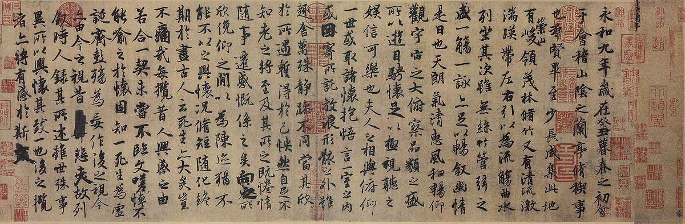

Vương Hi Chi tự Dật Thiếu, người đời Tấn, quê ở Cối Kê (nay thuộc Chiết Giang), làm quan đến chức Hữu quân tướng quân[1]. Ông nổi danh về chữ tốt hơn là về văn thơ, nên trong các sách văn học sử không chép tên ông và ông cũng chỉ lưu truyền mỗi một bài Lan Đình Tập Tự[2] mà chúng tôi trích dịch dưới đây. Lối chữ thảo và chữ lệ của ông quán tuyệt cổ kim.
Bài Tựa tập thơ Lan Đình này ông làm rồi viết, văn đã hay, chữ lại tốt, người ta gọi là thiếp Lan Đình, và coi là một nghệ phẩm hi hữu của Trung Hoa. Câu:
So vào với thiếp Lan Đình nào thua?
trong Truyện Kiều đã dùng tích đó.

.Lan Đình tập tự
Bản Thần Long – hiện trân tàng tại Viện Cố cung bác vật Bắc Kinh
Nguồn: http://zh.wikipedia.org/wiki/%E8%98%AD%E4%BA%AD%E9%9B%86%E5%BA%8F
NGUYÊN VĂN
蘭亭集序
永和九年，歲在癸丑，暮春之初，會於會稽，山陰之蘭亭，修禊事也。群賢畢至，少長咸集。此地有崇山峻嶺，茂林修竹；又有清流激湍，映帶左右，引以為流觴曲水。列坐其次。雖無絲竹管絃之盛，一觴一詠，亦足以暢敘幽情。是日也，天朗氣清，惠風和暢；仰觀宇宙之大，俯察品類之盛；所以游目騁懷，足以極視聽之娛，信可樂也。
夫人之相與，俯仰一世，或取諸懷抱，悟言一室之內；或因寄所托，放浪形骸之外。雖趣捨萬殊，靜躁不同，當其欣於所遇，暫得於己，快然自足，不知老之將至。及其所之既倦，情隨事遷，感慨繫之矣。向之所欣，俯仰之間，已為陳迹，猶不能不以之興懷；況修短隨化，終期於盡。古人雲：“死生亦大矣。”豈不痛哉！
每覽昔人興感之由，若合一契；未嘗不臨文嗟悼，不能喻之於懷。固知一死生為虛誕，齊彭殤為妄作；後之視今，亦猶今之視昔，悲夫！
故列敘時人，錄其所述，雖世殊事異，所以興懷，其致一也。後之覽者，亦將有感於斯文。
PHIÊN ÂM
LAN ĐÌNH TẬP TỰ
Vĩnh Hoà cửu niên, tuế tại Quí Sửu, mộ xuân chi sơ, hội ư Cối Kê, Sơn Âm chi Lan Ðình, tu hễ sự dã. Quần hiền tất chí, thiếu trưởng hàm tập. Thử địa hữu sùng sơn tuấn lĩnh, mậu lâm tu trúc; hựu hữu thanh lưu kích thoan, ánh đái tả hữu, dẫn dĩ vi lưu thương[3] khúc thuỷ. Liệt toạ kì thứ. Tuy vô ti trúc quản huyền chi thịnh, nhất thương nhất vịnh, diệc túc dĩ sướng tự u tình. Thị nhật dã, thiên lãng khí thanh, huệ phong hoà sướng; ngưỡng quan vũ trụ chi đại, phủ sát phẩm loại chi thịnh; sở dĩ du mục sính hoài, túc dĩ cực thị thính chi ngu, tín khả lạc dã.
Phù nhân chi tương dữ, phủ ngưỡng nhất thế, hoặc thủ chư hoài bão, ngộ ngôn nhất thất chi nội; hoặc nhân kí sở thác, phóng lãng hình hài chi ngoại. Tuy thú xá vạn thù, tĩnh táo bất đồng; đương kì hân ư sở ngộ, tạm đắc ư kỉ, khoái[4] nhiên tự túc, bất tri lão chi tương chí. Cập kì sở chi kí quyện, tình tuỳ sự thiên, cảm khái hệ chi hĩ. Hướng chi sở hân[5], phủ ngưỡng chi gian, dĩ vi trần tích, do bất năng bất dĩ chi hưng hoài; huống tu đoản tuỳ hoá, chung kì ư tận. Cổ nhân vân: “Tử sinh diệc đại hĩ”, khởi bất thống tai!
Mỗi lãm tích nhân hưng cảm chi do, nhược hợp nhất khế; vị thường bất lâm văn ta điệu, bất năng dụ chi ư hoài. Cố tri nhất tử sinh vi hư đản, tề Bành thương vi vọng tác; hậu chi thị kim, diệc do kim chi thị tích, bi phù!
Cố liệt tự thời nhân, lục kì sở thuật, tuy thế thù sự dị, sở dĩ hứng hoài, kì trí nhất dã. Hậu chi lãm dã, diệc tương hữu cảm ư tư văn.
DỊCH NGHĨA
BÀI TỰA TẬP THƠ LAN ĐÌNH
Năm thứ chín niên hiệu Vĩnh Hoà[6] nhằm năm Quí Sửu, đầu tháng ba[7], hội ở Lan Đình tại huyện Sơn Âm, quận Cối Kê[8] để cử hành lễ tu hễ[9]. Quần hiền tới đủ, già trẻ đều họp. Nơi đó có núi cao, đỉnh lớn, rừng rậm, trúc dài, lại có dòng trong chảy xiết, chiếu quanh hai bên, dẫn nước uốn khúc là chỗ thả chén[10]. Mọi người ngồi theo thứ tự. Tuy không có tiếng tơ, tiếng trúc, tiếng quản, tiếng huyền[11] cho vui tai, nhưng uống một hớp rượu, ngâm một câu thơ, cũng đủ sướng u tình[12]. Hôm đó khí trời trong sáng, gió nhẹ lâng lâng, ngẩng nhìn vũ trụ mênh mông, cúi xem vạn vật muôn vẻ, phòng tầm mắt, mở cõi lòng, đủ để hưởng hết cái thú của tai mắt, thực là vui vậy.
Người ta cùng cuối ngửa trong đời[13], có người đem cái hoài bão của mình ra đàm đạo với bạn bè trong một nhà, có kẻ gởi tấm lòng ở một sự tình gì mà phóng lãng ở ngoài hình hài; hai hạng người đó tuy thủ xả tĩnh động[14] khác nhau, nhưng đương lúc cái già sắp tới, kịp đến khi mõi mệt, tình ý theo thế sự mà thay đổi, thì đều sinh ra cảm khái. Cái mà trước kia vui trong lúc cuối ngửa, nay đã thành ra vết cũ, mà nhớ lại lòng không thể không hoài cảm. Huống đời người dài ngắn do trời, nhưng đều qui về cõi chết cả. Cổ nhân nói: “Tử sinh đều là việc lớn”, há chẳng đau lòng thay!
Mỗi khi xét nguyên do người đời xưa cảm khái như in với người đời nay[15], không lần nào đọc văn người trước mà không than thở buồn rầu, trong lòng không hiểu tại sao. Cho nên bảo sinh tử cũng như nhau là lời hư ngoa[16]; bảo Bành Tổ không hơn gì kẻ chết yểu[17] là lời nói láo. Người đời sau nhìn lại đời bây giờ cũng như người bây giờ nhìn lại đời xưa[18], buồn thay!
Vì vậy tôi chép lại chuyện người trong tiệc, sao lục thơ họ làm, tuy đời và việc đều khác nhưng lẽ sở dĩ cảm khái thì là một[19]. Người đời sau đọc bài này chắc không khỏi bùi ngùi[20].
NHẬN ĐỊNH
Phần trên tả cuộc vui xuân, lời bóng bảy mà du dương, hay nhất là những câu: - hựu hữu thanh lưu kích thoan, ánh đái tả hữu; - nhất thương nhất vịnh, diệc túc dĩ sướng tự u tình; - sở dĩ du mục sính hoài, túc dĩ cực thị thính chi ngu.
Phần dưới dài gấp đôi ghi cảm thán của tác giả; chỉ là cái buồn thiên cổ, buồn cho nỗi vui thấm thoắt, cho lẽ tử sinh của con người, nhưng tác giả chẳng những thương cho mình mà còn thương cả cho người trước và người sau, cảm xúc triền miên, bồi hồi, trên hô dưới hứng, uyển chuyển uốn khúc như dòng nước ở trước mặt tác giả vậy.
Cổ nhân khuyên kín những câu: - đương kì hân ư sở ngộ, tạm đắc ư kỉ, khoái nhiên tự túc, bất tri lão chi tương chí; - hậu chi thị kim, diệc do kim chi thị tích; - …
So sánh bài này với bài Xuân dạ yến đào lí viên tự của Lí Bạch (ở sau) thì đề tài như nhau, mà mỗi nhà mỗi giọng: giọng của Vương thì cảm khái triền miên, giọng của Lí thì thoáng đạt vui vẻ, cả hai đều có phong cách tao nhã. Lan Đình tập nay không ai nhắc tới mà Lan Đình tự thì nay vẫn còn truyền, thực cũng là một điều hi hữu trong văn học sử. Giá có được thiếp Lan Đình[21] mà chụp lại, in thành phụ bản trong cuốn này thì thú quá!
Chú thích:
[1] Vì vậy ông còn được gọi là Vương Hữu quân. (Goldfish).
[2] Trong bộ Đại cương văn học sử Trung Quốc (về sau viết tắt là ĐCVHSTQ), cụ Nguyễn Hiến Lê ghi nhan đề là Lan đình kí, và bảo: “Bài này là tựa một tập thơ do bạn bè ông làm sau bữa yến ở Lan Đình. Lan Đình là tên một toà lầu”. (Goldfish).
[3] Ta quen đọc là trường.
[4] Khoái: nguyên văn là 快. Trong ĐCVHSTQ cũng chép như vậy. Theo bản đăng trên trang http://zh.wikipedia.org/wiki/%E8%98%AD%E4%BA%AD%E9%9B%86%E5%BA%8F thì phần nguyên văn chép là: 怡 (di), còn bản “Thần Long” thì chép là: 怏 (ưởng). (Goldfish).
[5] Hân: nguyên văn là 欣. (ĐCVHSTQ cũng vậy). Theo trang nêu trên thì phần nguyên văn chép là: 興 (hưng), bản “Thần Long” chép là: 欣 (hân). (Goldfish).
[6] Vĩnh Hoà là niên hiệu Tấn Mục Đế (345-361).
[7] Nguyên văn: mộ xuân là cuối mùa xuân.
[8] Sơn Âm, Cối Kê đều ở Chiết Giang.
[9] Lễ tu hễ là một cuộc lễ vào ngày tị trong thượng tuần tháng ba; người ta ra bờ sông tắm rửa, vẩy nước để trừ ma và những điều bất tường.
[10] Trong khi làm lễ đó, người ta ngồi rải rác hai bên bờ sông, thả một chén rượu ở trên dòng nước, chén trôi xuôi xuống, tấp vào chỗ nào thì người ta lại vớt lên, uống rượu trong chén (vì vậy cho nên gọi là lưu thương: lưu là trôi, thương là chén rượu); có lẽ không muốn cho chén trôi xa, người ta lựa chỗ nào dòng nước uốn khúc mà thả; nếu không thì phải dẫn nước sao cho nó chảy uốn khúc (như vậy gọi là khúc thuỷ: khúc là uốn cong, thuỷ là nước)
[11] Quản là ống sáo, tiếng trúc tức là tiếng sáo. Huyền là dây đàn, cái đàn; tiếng tơ tức tiếng đàn.
[12] Nghĩa là lòng hả hê, vui vẻ, không buồn rầu nữa.
[13] Ý nói: sống ở trên đời.
[14] Thủ là lấy, xả là bỏ. Thủ và động trỏ hạng người xử thế, xả và tĩnh trỏ hạng người xuất thế. Hai hạng người đó, tác giả đã nói trong hàng trên: hạng đem hoài bão ra đàm đạo với bạn bè và hạng phóng lãng ở ngoài hình hài.
[15] Nguyên văn: nhược hợp nhất khế, nghĩa là như hai phần một tờ khế ước hợp với nhau. Cổ nhân làm khế ước, có hai phần: bên phải, bên trái; mỗi người giữ một bên, khi ráp hai phần lại thì hợp với nhau. Câu này ý nói cổ nhân cũng buồn vvề sinh tử như ta.
[16] Coi sinh tử như nhau là thuyết của Trang Tử, cũng là thuyết của nhà Phật.
[17] Bành Tổ thọ tám trăm tuổi; thương là đứa trẻ chết khi chưa đầy tuổi tôi. Coi thọ yểu cũng như nhau cũng là thuyết của Trang Tử.
Ý nói: người thời nào cũng buồn về sinh tử mà lại bảo sinh tử là một, thọ yểu như nhau thì quả là không hợp nhân tình.
[18] Ý nói: đời sau có nhìn lại đời bây giờ thì cũng không thấy được người bây giờ, cũng như bây giờ nhìn lại thời trước, không thấy cổ nhân nữa.
[19] Câu này ứng với câu: “Mỗi lãm tích nhân hưng cảm chi do, nhược hợp nhất khế” ở trên.
[20] Câu này ứng với câu: “vị thường bất lâm văn ta điệu” ở trên.
[21] Nhiều tài liệu cho rằng bản gốc đã mất, các bản còn truyền ngày nay đều là “mô bản” (như bản “Thần Long” trong ảnh trên). (Goldfish)